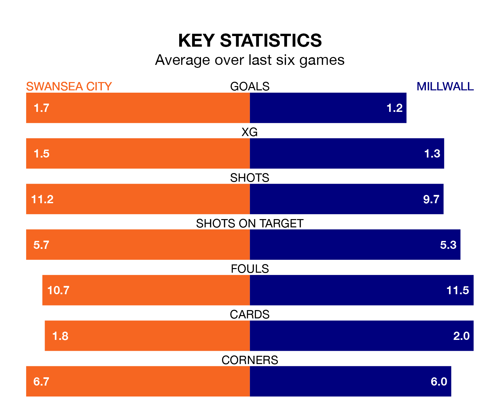

Millwall visit Swansea City at the Swansea.com Stadium on Saturday lunchtime on the back of four consecutive wins in EFL Championship.
Millwall have picked up 12 points from their last six games, and they face a Swans side who drew their last match, and have collected 10 points from the last possible 18.
In the last 10 years, Swansea and Millwall have played each other on 11 occasions. Swansea won six of them, Millwall two, and they drew three times.
On average, the Swans scored 1.5 goals and the Lions 0.7 in those matches.
Their last meeting was on September 30, when Swansea won 3-0 away.
With 44 goals in 45 games so far this season, Millwall are the league's third-lowest scorers with 1.0 goals per game. But they are conceding fewer than average too, letting in 55 goals at a rate of 1.2 per game.
Swansea, meanwhile, are average scorers, with 1.3 goals per game. They have conceded 1.4 goals per game.
The Lions are 16th in the table after 45 games, of which they have won 15 and drawn 11, earning 56 points.
City are three places ahead of the away side in 13th, with 15 wins and 12 draws putting them on 57 points.
Swansea's last match was on Saturday, a 2-2 draw against Norwich City, with Jamie Paterson and Matt Grimes getting the goals for the Swans.
Millwall beat Plymouth Argyle 1-0 last time out, also on Saturday, with Jake Cooper on the scoresheet.
Saturday's match will be refereed by Geoff Eltringham, who has taken charge of 17 EFL Championship games so far this season, issuing one red card and booking 65 players. He has awarded two penalties.
The last Swansea game Eltringham refereed was a 1-1 away draw with Sheffield Wednesday on March 29. His last Millwall match was their 2-0 loss at home against Sheffield Wednesday on February 17.
Updated: 12:00 (UTC), 02/05/24